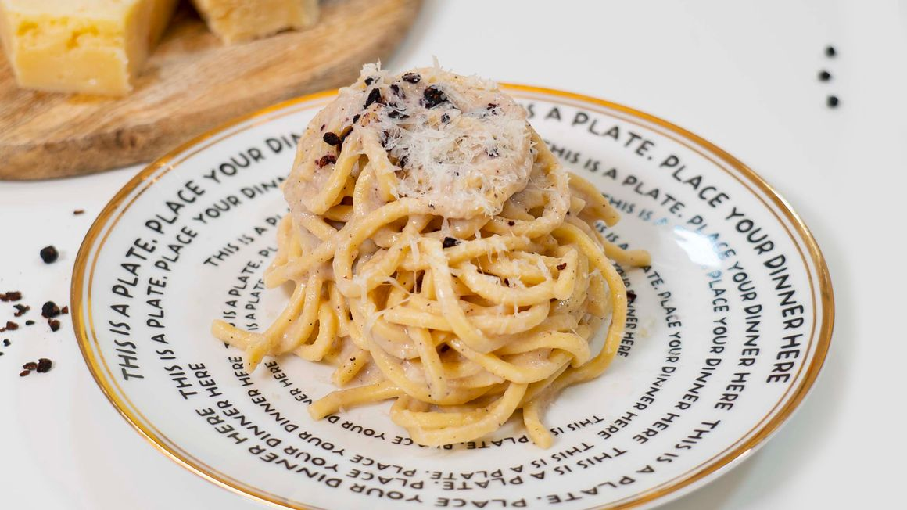

Cacio e pepe
Ingredienti
Di seguito riportiamo gli ingredienti per preparare il nostro piatto.
Le dosi sono per 4 persone.
- Spaghetti 320 g
- Pepe nero q.b.
- Pecorino romano da grattugiare 200g
Preparazione
- Mettete sul fuoco una pentola con l'acqua per cuocere la pasta.
- Nel frattempo grattugiate il Pecorino romano e trasferitelo quasi tutto in una ciotola, tenendone un po' da parte per l'impiattamento.
- Quando l'acqua sarà arrivata a bollore, salate moderatamente e metteteci gli spaghetti.
- Intanto pestate i grani di pepe con un batticarne (oppure usate un macinino).
- Versate il pepe in una padella antiaderente e tostatelo a fuoco dolce, mescolando con un mestolo. Sfumate con un paio di mestoli dell'acqua di cottura della pasta. Continuate a mescolare a fuoco dolce.
- Scolate gli spaghetti e trasferiteli nella padella, avendo cura di conservare l'acqua di cottura. Terminate la cottura degli spaghetti in padella, risottandoli, aggiungendo acqua calda al bisogno e rimestando continuamente con le pinze. Aspettate che il fondo della padella sia quasi asciutto prima di aggiungere altra acqua.
- Potete preparare la crema di Pecorino: versate un mestolo di acqua di cottura calda nella ciotola con il Pecorino grattugiato, poi mescolate energicamente con una frusta a mano. La consistenza che dovrete ottenere è pastosa. Nel caso una volta pronta la crema la pasta non dovesse essere pronta per la mantecatura, ponete brevemente la ciotola sulla pentola con l'acqua calda continuando a mescolare con la frusta, così da avere la crema a una temperatura simile a quella della pasta.
- Quando gli spaghetti saranno giunti a cottura, spegnete il fuoco e unite la crema di Pecorino, rimestando di continuo con le pinze. Per la cremosità ideale regolatevi aggiungendo più Pecorino oppure poca acqua di cottura al bisogno. Servite i vostri spaghetti cacio e pepe spolverizzando con il restante Pecorino grattugiato e altro pepe macinato al momento a piacere.